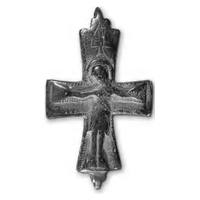

Catalog › CE-0480 · SYR2012-79
Valvă de encolpion (față), cat. 79, NMIU Kiev
sec. XI–XII (1001–1200) · loc necunoscut · Muzeul Național de Istorie a Ucrainei (НМИУ), Kiev, inv. в 4625/797 (3095, III — 1819)
single valve of a reliquary cross, altul; c. XI–XII (1001–1200); find spot unknown; kept at Muzeul Național de Istorie a Ucrainei (НМИУ), Kiev.


Identificare
- Categorie
- Valvă izolată
- Material
- Altul
- Tehnică
- Turnare în relief; Gravare (incizie)
- Dimensiuni
- Î 50 × L 38 × Gr 6 mm
Iconografie
- Descriere avers
- Imaginea în relief a lui Hristos răstignit este completată cu imaginea lemnului crucii: brațul orizontal și tăblița au fost marcate cu linii adâncite. Hristos, cu trunchiul puțin arcuit, brațe și picioare aproape drepte pe care sunt figurate stigmate, cu capul ușor înclinat spre umărul drept și nimb crucifer. Relief înalt, dar fără detalii. Pe marginea valvei s-a păstrat local o crestătură oblică. Se observă un rând de adâncituri punctiforme sub brațele lui Hristos și lanțuri de puncte lângă piciorul stâng, posibile urme ale unei inscripții sau ale trasării ei.
Datare și atribuire
- Datare
- sec. XI–XII (1001–1200)
- Tipologie
- Răstignirea în relief pe valva anterioară, cu lemnul crucii incizat
Descoperire
- Context
- Colecție (fără context)
- Coordonate
- 50.4536° N, 30.5164° E
- Precizia locului
- Loc de păstrare (loc de descoperire incert)
Păstrare și referințe
- Colecție
- Muzeul Național de Istorie a Ucrainei (НМИУ), Kiev
- Nr. inventar
- в 4625/797 (3095, III — 1819)
- Bibliografie
- A. A. Пескова, Л. В. Строкова, Христианские древности Византии в «Сирийской коллекции» Б. И. и В. Н. Ханенко, Sankt-Petersburg–Kiev, 2012, 225 p. [Peskova, Strokova 2012], p. 194, cat. nr. 79, ilustrația (fotografie și desen) de la p. 194. Publicată și în: E. A. Korzuhina, A. A. Peskova, 2003, p. 96, cat. II.4.1/2.
- Figura
- ilustrația la cat. nr. 79
- Planșe
- Peskova, Strokova 2012, p. 194
- Observații
- Valva anterioară a unui encolpion cu brațe drepte, puțin evazate; netedă pe interior, adâncă și foarte clară, cu rebord ușor teșit. Singura analogie: valva de la cetatea Kniaža Gora de lângă satul Pekari, aproape de Kaniv (Hanenko 1900, pl. XIX, nr. 232/233), găsită împreună cu valva posterioară cu un sfânt în picioare în haine de războinic (după descrierea lui Hanenko, probabil Sf. Gheorghe). Această valvă nu este aceeași piesă cu cea din albumul Hanenko (1900). Dimensiuni în sursă (în paranteză, înălțimea cu urechile): 5,0 (5,8; 6,65 cu urechile)×3,8 cm; grosime 0,4–0,6 cm. Atribuirea autoarelor: Bizanț sau Rusia veche, sec. XI–XII. Locul descoperirii nu este dat în sursă; aparține anexei II (cruci pectorale de proveniență necunoscută din colecția НМИУ). Material în sursă: aliaj de cupru. Locul descoperirii nu e cunoscut cu precizie; punctul de pe hartă marchează locul de păstrare (Muzeul Național de Istorie a Ucrainei), nu locul descoperirii. Coordonate: nu sunt date în sursă.
Citare: Corpus Encolpiorum, CE-0480, Valvă de encolpion (față), cat. 79, NMIU Kiev, --root/piese/SYR2012-79/ (accesat 2026-10-17).